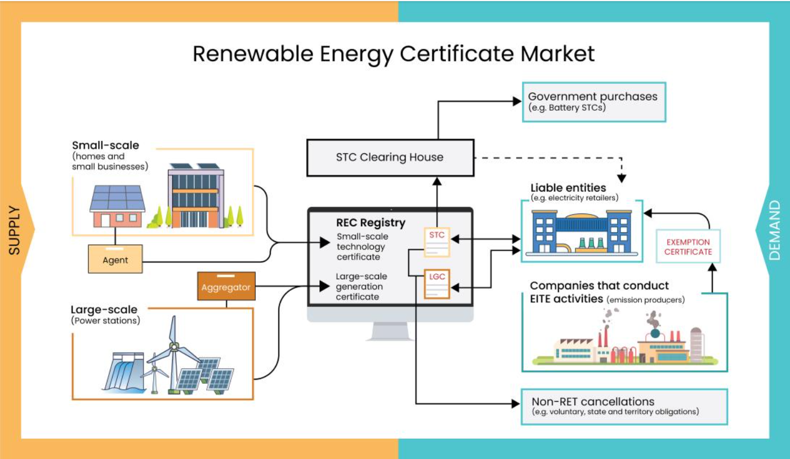

An end-to-end data platform concept for monitoring Australia's Renewable Energy Certificate (LGC / STC) shortfalls, built on real public register data from the Clean Energy Regulator.
Liable entities under Australia's Renewable Energy Target scheme — electricity retailers and large energy users — must surrender enough Large-scale Generation Certificates (LGCs) and Small-scale Technology Certificates (STCs) each year to cover their obligations. When they fall short, a shortfall charge applies and the shortfall is recorded on the Clean Energy Regulator's public register. That register is published as a flat, biannual spreadsheet with no easy way to see who is falling short, how shortfalls trend over time, or which entities carry the largest outstanding balances — so regulators, analysts, and the liable entities themselves have no single place to monitor this compliance risk.
Learn More About REC Market →
In scope
Out of scope
Conceptual pipeline for turning the CER's published registers into governed, queryable analytics — this project implements the source ingestion and dashboard layers below using the real register data; the orchestration/AI layers illustrate the intended target design.
UML class diagram of the dimensional model, derived from the two source registers' actual published columns. Shared dimensions (liable_entity, assessment_year) link both fact classes.
Live figures computed directly from the CER's published LGC and STC shortfall registers (downloaded 2026-07-03).
Certificates still outstanding, by the year they were assessed.
Small-scale Technology Certificate shortfall since scheme start (2011).
Ask a question about the register data below — answered instantly by a rule-based engine running entirely in your browser against the real CER figures (no external AI call, so no API key or server involved).
Try one